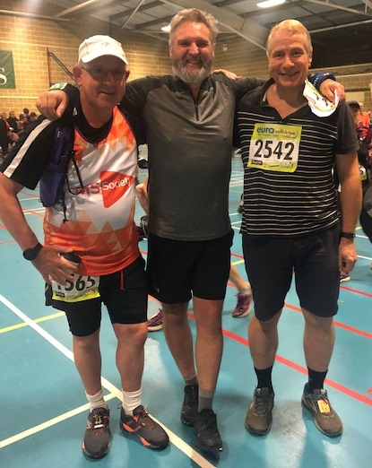
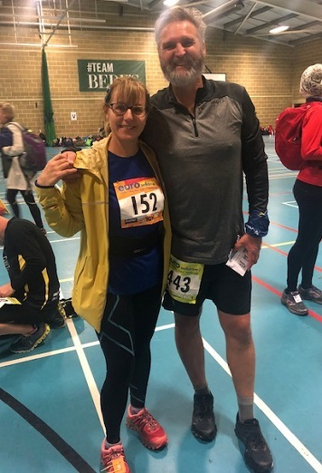

Seven SAC members tackled this year's Beachy Head Marathon on 26 October, writes Jim Knight.
Whilst the rest of the country had pouring rain, it was mild and windy on Saturday morning on the Downs around Beachy Head, with heavy rain forecast for the afternoon. The course was diverted in two places as a result of flooding, leading to big queues on the section into Alfriston and it was here that I met Rob Carr and Simon Lewis enjoying their annual outing to Beachy Head – Rob’s 10th.

As usual, the race was well marshalled with lots of food stations including the famous (and very welcome) giant sausage rolls at 16.8 miles.
I ran with Bet Benn on the section over the Seven Sisters to Birling Gap – 7 steep climbs followed by 7 equally steep descents made more difficult by the winds gusting up to 40+mph.
It wasn’t a day for fast times, with the winning time more than 15 minutes slower than last year. Fortunately, the wind was behind us on the final section and I managed to stagger into the finish just before the heavy rain started. It wasn’t as fast as I had hoped, but I’m pleased to have finished, and hope to be able to walk again by next weekend.
Heather fell at 5 miles and hurt her ankle. After treatment at 12 miles, she carried on to finish in just under 5 hours. Sylvia walked round with her son and "had a fantastic day and great fun".

Although I didn’t see him on the day, it was good to see Paul Tabor in the results, finishing in an impressive 7.47.

Caitlin had a good run for her first ever trail marathon coming in sub 5 hours, adds Rob Carr. Julie did the 10k and her time was 1:19. Unfortunately it wasn’t a great day for me. I struggled with lower back pain and lack of mobility from about 16 miles. I’d have quite happily pulled out at the aid station before Birling Gap, but was determined to finish what was my 200th marathon. I’m glad I picked Beachy Head as my 200th and it it was great to see so many SAC runners and to have my family there.
SAC Results were.
Heather Fitzmaurice 4.57, Caitlin Carr 4.59, Jim Knight 6.37, Rob Carr 6.39, Bet Benn 6.40, Paul Tabor 7.47, Sylvia Lewis 8.16. Links to the full results are here.